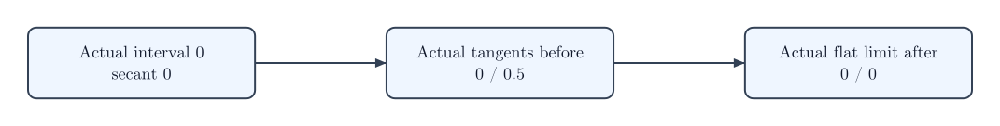
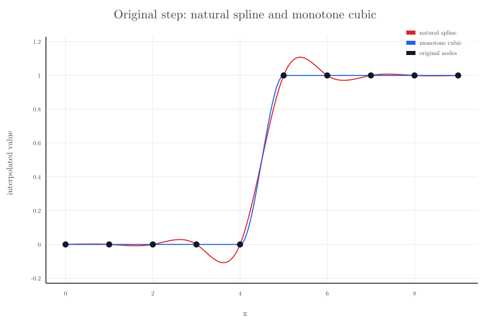
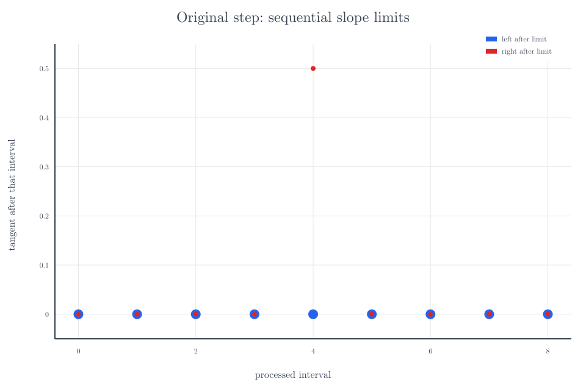
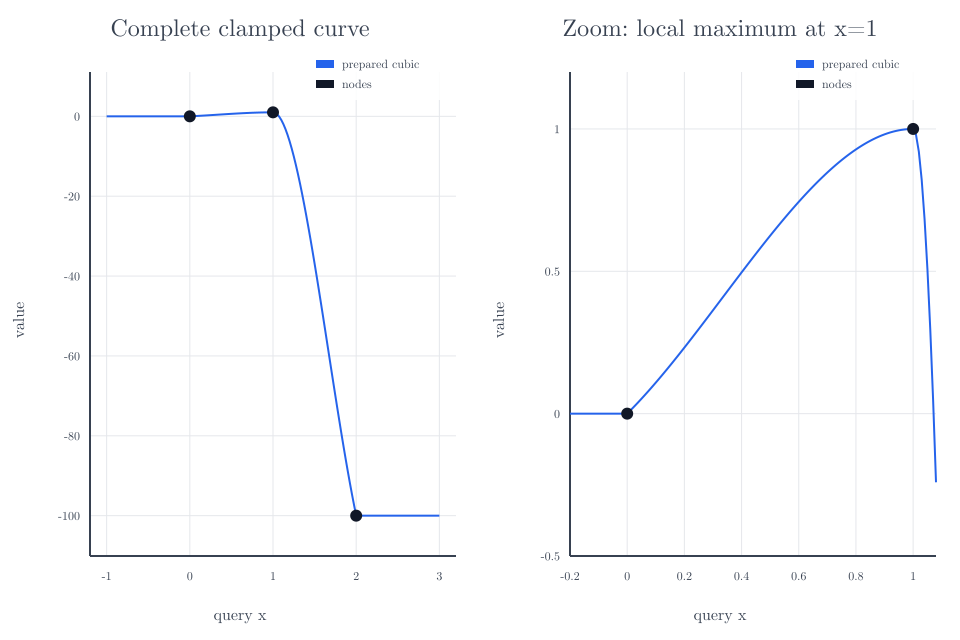

Monotone cubic interpolation
Abstract
Interpolate ordered observations with a smooth curve without introducing reversals or overshoot between neighboring values. We derive slope-limited cubic Hermite pieces, inspect actual shared-tangent changes, retain the original step comparison with a natural cubic spline, and demonstrate finite-query endpoint clamping. A prepared native model avoids rebuilding slopes for every plotted point.
Cubic pieces and the limiter
For interval width h=x[i+1]−x[i], normalized position t=(x−x[i])/h and endpoint tangents m[i],m[i+1], use the cubic Hermite basis. It reproduces the endpoint ordinates and tangents, giving a globally C1 interpolant when adjacent pieces share tangent values.
Let delta=(y[i+1]−y[i])/h. For nonzero delta, normalize the endpoint slopes as alpha=m[i]/delta and beta=m[i+1]/delta. A sufficient monotonicity region is alpha,beta nonnegative with alpha squared plus beta squared at most9. The derivative divided by delta is the quadratic6t(1−t)+alpha(1−4t+3t squared)+beta(3t squared−2t), which is nonnegative throughout this region. Hence each interval remains between its endpoint values in exact arithmetic. This is a sufficient region, not a necessary characterization of every monotone cubic.
The producer begins with endpoint secants and interior averages. In left-to-right order it zeroes both tangents on a flat interval, clamps wrong-sign tangents, then radially scales a remaining pair outside the radius3 region. Later intervals only decrease a shared tangent's magnitude, preserving earlier sufficient bounds. Final tangents define evaluation; a decision record describes the state at that time and can precede later changes to its shared right tangent.
Three nodes: a plateau followed by a rise
Nodes(0,0),(1,0),(2,1) initially have tangents0,0.5,1. The flat first interval zeroes its two tangents, leaving final tangents0,0,1. The second interval therefore has p(t)=2t squared−t cubed and value0.375 at its midpoint. The diagram reads the actual first limiting decision.
#include <dm/dm.hpp>
int main() {
std::filesystem::create_directories("build");
dm::algorithms::MonotoneCubic c({0, 1, 2}, {0, 0, 1});
auto &r = c.decisions()[0];
dm::graphics::Diagram d;
d.node("a", {0, 0},
std::format("Actual interval {}\nsecant {}", r.interval, r.secant)).node("b", {6, 0}, std::format("Actual tangents before\n{} / {}", r.left_before, r.right_before)).node("c", {12, 0}, std::format("Actual flat limit after\n{} / {}", r.left_after, r.right_after)).edge("a", "b").edge("b", "c");
std::print("| node | value | final tangent |\n| ---: | ---: | ---: |\n");
for (std::size_t i = 0; i < c.xs().size(); ++i)
std::print("| {} | {} | {} |\n", c.xs()[i], c.ys()[i], c.tangents()[i]);
std::print("\nMidpoint value: {}.\n", c.evaluate(1.5));
d.save_svg("build/monotone_tiny.svg");
}| node | value | final tangent |
|---|---|---|
| 0 | 0 | 0 |
| 1 | 0 | 0 |
| 2 | 1 | 1 |
Midpoint value: 0.375.

Retain the original ten-node step
The original x values are0..9 and ordinates0,0,0,0,0,1,1,1,1,1. A natural cubic spline enforces C2 smoothness with zero second derivatives at the ends; the shape-preserving curve enforces local slope restrictions and is generally only C1. The original451-point grid is retained. Its table and plot compare native evaluations, without implementing either interpolator in the report. Sampled extrema describe the plotted grid, while the interval-shape argument gives the exact-arithmetic bound for the monotone method.
#include <dm/dm.hpp>
int main() {
std::filesystem::create_directories("build");
std::vector<double> nodes{0, 1, 2, 3, 4, 5, 6, 7, 8, 9}, values{0, 0, 0, 0,
0, 1, 1, 1,
1, 1};
dm::algorithms::MonotoneCubic mono(nodes, values);
dm::algorithms::PreparedCubicSpline spline(dm::algorithms::natural_cubic_spline(nodes, values));
std::vector<double> x, m, s;
for (int i = 0; i <= 450; ++i) {
double q = 9.0 * i / 450;
x.push_back(q);
m.push_back(mono.evaluate(q));
s.push_back(spline.evaluate(q));
}
std::print("| method | sampled minimum | sampled maximum |\n| --- | ---: | ---: |\n| monotone cubic | " "{} | {} |\n| natural spline | {} | {} |\n",
*std::min_element(m.begin(), m.end()),
*std::max_element(m.begin(), m.end()),
*std::min_element(s.begin(), s.end()),
*std::max_element(s.begin(), s.end()));
auto p = dm::graphics::RPlot::create();
p.line(x, s, "natural spline", {220, 38, 38}, 2).line(x, m,
"monotone cubic",
{37, 99, 235}, 2).points(nodes, values, "original nodes", {17, 24, 39}, 6).title("Original step: natural spline and monotone cubic").x_label("x").y_label("interpolated value").save_svg("build/monotone_original.svg");
}| method | sampled minimum | sampled maximum |
|---|---|---|
| monotone cubic | 0 | 1 |
| natural spline | -0.10782164705882351 | 1.1078216470588236 |

Read sequential decisions and final tangents separately
A shared node's tangent may be changed when processing either neighboring interval. The trace preserves those actual intermediate mutations, while the model separately exposes its final tangent array. The original step has many plateau decisions. The single rising interval is bounded by final zero tangents, yielding the familiar smoothstep3t squared−2t cubed between x=4 and5.
#include <dm/dm.hpp>
int main() {
std::filesystem::create_directories("build");
dm::algorithms::MonotoneCubic c({0, 1, 2, 3, 4, 5, 6, 7, 8, 9},
{0, 0, 0, 0, 0, 1, 1, 1, 1, 1});
std::vector<double> x, left, right;
std::print("| interval | secant | left before | right before | flat | scaled | left after | right after " "|\n| ---: | ---: | ---: | ---: | --- | --- | ---: | ---: |\n");
for (auto &r : c.decisions()) {
x.push_back(r.interval);
left.push_back(r.left_after);
right.push_back(r.right_after);
std::print("| {} | {} | {} | {} | {} | {} | {} | {} |\n", r.interval,
r.secant, r.left_before, r.right_before, r.flat, r.scaled,
r.left_after, r.right_after);
}
auto p = dm::graphics::RPlot::create();
p.points(x, left, "left after limit", {37, 99, 235}, 8).points(
x, right, "right after limit", {220, 38, 38}, 4).title(
"Original step: sequential slope limits").x_label("processed interval").y_label("tangent after that interval").save_svg("build/monotone_decisions.svg");
}| interval | secant | left before | right before | flat | scaled | left after | right after |
|---|---|---|---|---|---|---|---|
| 0 | 0 | 0 | 0 | true | false | 0 | 0 |
| 1 | 0 | 0 | 0 | true | false | 0 | 0 |
| 2 | 0 | 0 | 0 | true | false | 0 | 0 |
| 3 | 0 | 0 | 0.5 | true | false | 0 | 0 |
| 4 | 1 | 0 | 0.5 | false | false | 0 | 0.5 |
| 5 | 0 | 0.5 | 0 | true | false | 0 | 0 |
| 6 | 0 | 0 | 0 | true | false | 0 | 0 |
| 7 | 0 | 0 | 0 | true | false | 0 | 0 |
| 8 | 0 | 0 | 0 | true | false | 0 | 0 |

Sign changes and the endpoint policy
For ordinates0,1,−100 at x=0,1,2, the initial middle tangent is negative despite the first interval's positive secant. The producer clamps it before computing the radial norm. The legacy limiter computed ratios before clamping and could restore a wrong-sign tangent during its subsequent scaling; this is corrected. The final middle tangent is zero, so the local maximum is respected. A second panel zooms around that maximum while the first retains the complete curve and endpoint clamps.
Finite queries outside the node range now return the nearest endpoint ordinate, matching the documented clamping contract. The legacy implementation only clamped its interval index and then extrapolated the cubic. Nonfinite queries throw. These endpoint and sign-change fixes are intentional behavior corrections; they are not hidden by the original monotone example.
#include <dm/dm.hpp>
int main() {
std::filesystem::create_directories("build");
dm::algorithms::MonotoneCubic c({0, 1, 2}, {0, 1, -100});
std::vector<double> x, y;
for (int i = 0; i <= 160; ++i) {
double q = -1 + i / 40.0;
x.push_back(q);
y.push_back(c.evaluate(q));
}
std::print("Actual middle tangent: {}. First interval right-clamped: {}.\n\n| finite query | native " "value |\n| ---: | ---: |\n",
c.tangents()[1], c.decisions()[0].right_clamped);
for (double q : {-1., 0., .5, 1., 1.5, 2., 3.})
std::print("| {} | {} |\n", q, c.evaluate(q));
auto full = dm::graphics::RPlot::create();
full.line(x, y, "prepared cubic", {37, 99, 235}, 2).points(c.xs(), c.ys(),
"nodes",
{17, 24, 39}, 6).title("Complete clamped curve").x_label("query x").y_label("value");
std::vector<double> zx, zy;
for (int i = 0; i <= 128; ++i) {
double q = -.2 + i * .01;
zx.push_back(q);
zy.push_back(c.evaluate(q));
}
auto zoom = dm::graphics::RPlot::create();
zoom.line(zx, zy, "prepared cubic", {37, 99, 235}, 2).points({0, 1}, {0, 1},
"nodes",
{17, 24, 39}, 6).x_limits(-.2, 1.08).y_limits(-.5, 1.2).title("Zoom: local maximum at x=1").x_label("query x").y_label("value");
dm::graphics::RLayout::create(1, 2).add(full).add(zoom).fit_panels().save_svg("build/monotone_controls.svg");
}Actual middle tangent: 0. First interval right-clamped: true.
| finite query | native value |
|---|---|
| -1 | 0 |
| 0 | 0 |
| 0.5 | 0.625 |
| 1 | 1 |
| 1.5 | -36.875 |
| 2 | -100 |
| 3 | -100 |

Contracts, conclusion and references
The prepared model owns equal-size node arrays with at least two finite entries and strictly increasing x. It rejects invalid shape/order before interpolation, and throws if double interval widths or secants are unrepresentable. Query results must remain finite. Its optional input-node cap defaults to1000000; zero disables it. This counts complete nodes, not trace bytes. Final tangents and actual decision records are borrowed const references valid for the model's lifetime. The one-query compatibility function uses the same model with the optional cap disabled.
The small plateau explains shared-tangent limiting, and the original step separates shape preservation from C2 smoothness. Reusing a prepared model costs O(n) setup and storage, then O(log n) per query. Floating-point roundoff remains; sampled range checks alone are not a universal proof. The method interpolates, rather than denoises, its observations.
Fritsch and Carlson, Monotone piecewise cubic interpolation (1980) gives the monotonicity framework. The arithmetic-mean initial slopes, sequential radial limiter and endpoint policy specify this implementation.
Verification
The ten-report batch passes95 CTest cases,31 directly instrumented ASan/UBSan
cases,83 compiled and executed public examples,363/363 scoped documentation
definitions and ten representative hovers. Independent Python integer
arithmetic, MT19937-64/variation replay, graph sets, analytic interpolation,
circle boundary enumeration and actual-sample integration reconstruction agree
on915459 captured records. All six original RMS summaries are separately checked
using96 native MISER estimates and1600000 independently reproduced
plain-comparator points. Frozen valid-input comparisons include the original
seeded solver paths and full MOEA/D fronts. Ten checkout headers and ten
identically installed development headers compile independently, and an
installed-header native consumer links and runs. Each report has four executed
complete programs, four reviewed native figures and both HTML/Markdown exports
with computed-result and image-byte checks. This is a scoped native API audit,
not an installation claim for every language binding. Receipts:
build/mepml-conversion/batch-234-243/.